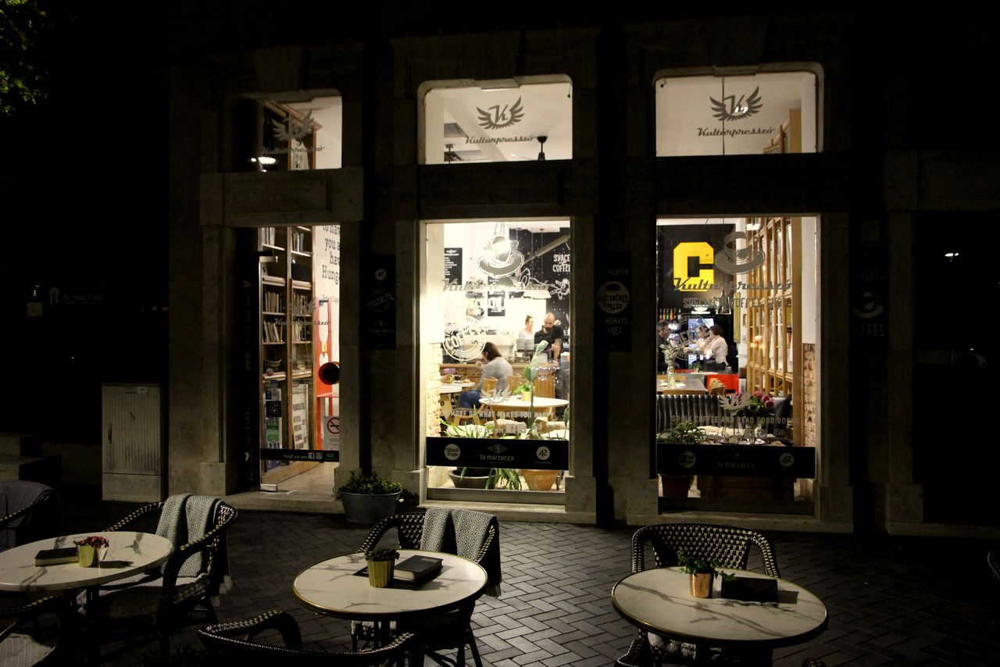
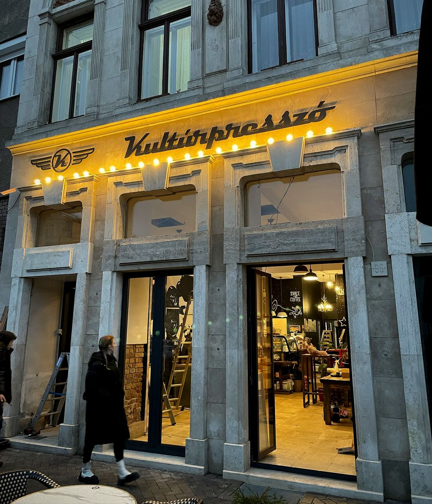
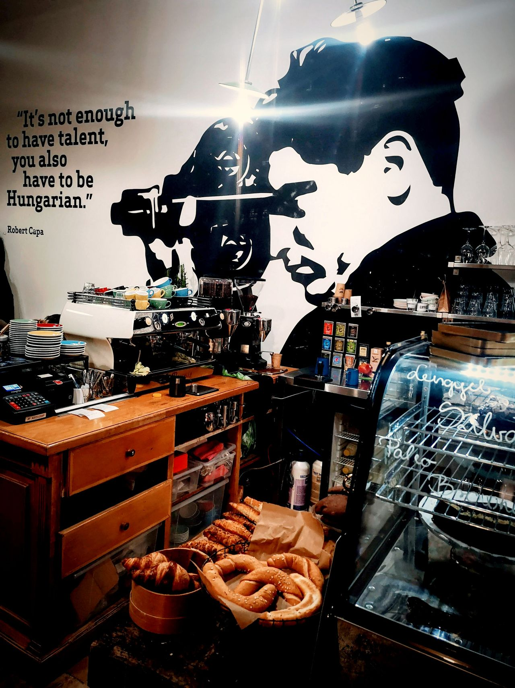

A ház története
Várkerület 96. Fényképészműterem 1860-tól, kávézó 2015 decembere óta.

Az első soproni fényirda
Tiefbrunner Sándor 1860-ban ebben a házban nyitotta meg Sopron első fényirdáját, vagyis fényképészeti és üvegszalonját. A korabeli röplapja németül hirdette a műtermet, akkor még a Grabenrunde 93-as szám alatt: így hívták akkor a Várkerületet.
„Der erste Glas-Salon für Photographie in Oedenburg”
Tiefbrunner röplapja, idézi Hárs József: A fényképezés története Sopron városában 1840–1957 (1984).
Műterem és laboratórium volt: portrék, tájképek, plasztikus és térbeli tárgyak, valamint sztereó képek készültek itt. A sztereó kép két, majdnem egyforma fotóból áll, amelyek a nézőben egyetlen térhatású képpé állnak össze.


Capa a pult mögött
A pult mögötti falon Robert Capa fekete sziluettje áll filmkamerával. Capa Budapesten született 1913-ban, Friedmann Endre néven, és a 20. század egyik leghíresebb fotóriportere lett. Mellette a neki tulajdonított mondat: „It’s not enough to have talent, you also have to be Hungarian.”
Időrend
- 1860Tiefbrunner Sándor megnyitja Sopron első fényirdáját a házban.
- 2015Decemberben, egy nyugodt, szilveszter előtti napon megnyílik a Kultúrpresszó.
- 2025Május 1-jén megnyílik a második kávézónk, a Botanik, a Botanikus kertben.